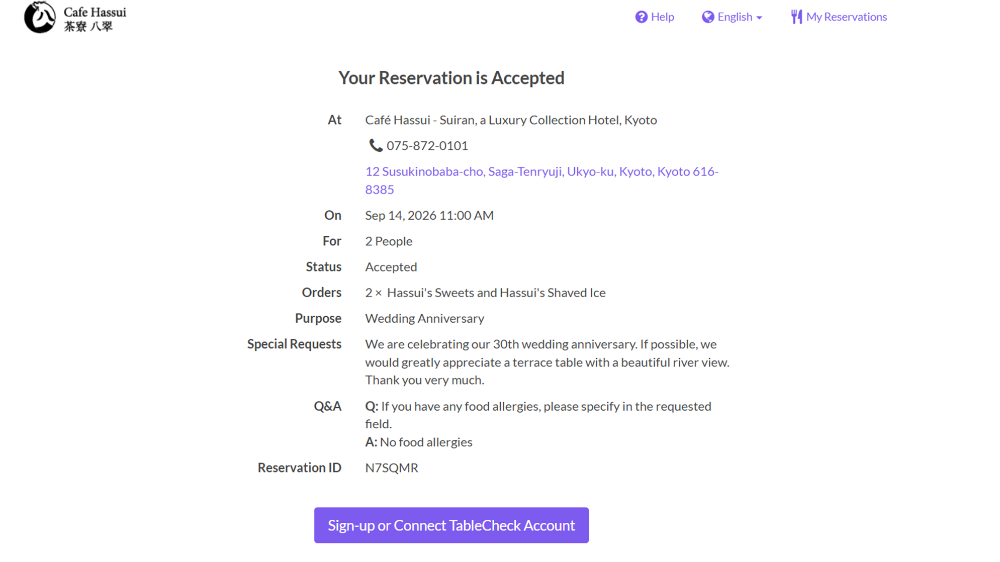
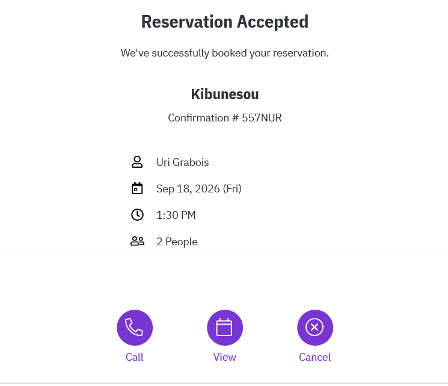
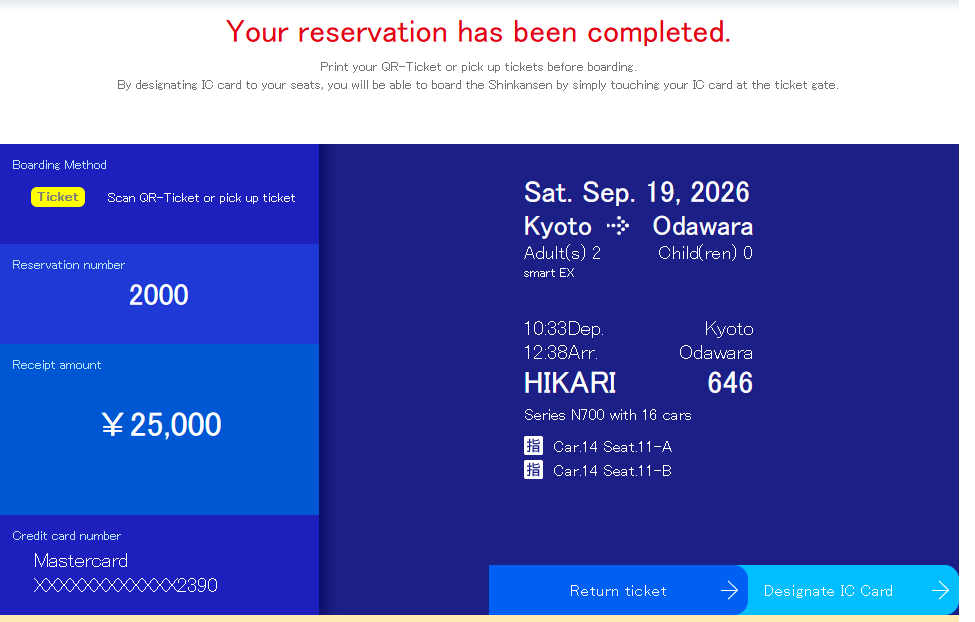

8/9/26
EY 594
TEL AVIV ← ABU DHABI
מפעיל: Etihad
המראה: TEL AVIV · 15:05
נחיתה: ABU DHABI · 19:15
מספר הזמנה: 84B2FF
טיסות הלוך וחזור עם Etihad
מפעיל: Etihad
מפעיל: Etihad
מפעיל: Etihad
מפעיל: Etihad
מקדש קטן אך מאוד מפורסם
לב אזור הבילויים של העיר
שכונת תרבות צעירה ואופנת רחוב
רחוב קניות ענק עם ארקייד מקורה
מקדש עם בובות
אטרקציה מרכזית טירה יפנית
תצפית להגיע לשקיעה מומלץ
מסעדה
שוק
כלבו יפני אוכל וקניות
קניון
שכונה קטנה ליד אומדה
אזור מרכזי יפן הישנה
אחת המסעדות הכי מוכרות ופופולריות רמה גבוהה
להזמין העברת מזוודות לוודא Same Day Delivery
טיול יום הלוך חזור
דקות הליכה מקדש המרכזי והמרשים ביותר
גן יפני מסורתי קטן ויפה מרחק הליכה
Edogawa Naramachi היא אפשרות טובה, אך המסעדה אינה מוזמנת ואפשר לבחור מסעדה אחרת באזור.
קבלת המזוודות
מקדש בודהיסטי הכי מפורסם באזור לרדת דרך רחובות יפים
אחד המקומות הכי מצולמים בקיוטו
מקדש שינטו מרכזי ומרשים בקצה רובע Gion. זמן מומלץ לביקור: כ־30–40 דקות.
Toei Kyoto Studio Park (Uzumasa Kyoto Village)
ערב ייחודי של יוקאי – יצורים ורוחות מהפולקלור היפני – בתוך תפאורת הקולנוע ההיסטורית של אוזומאסה.
תכנון הערב: לצאת מאזור Yasaka Shrine בערך ב־16:15. להקצות כ־40–50 דק׳ להגעה בתחבורה ציבורית + הליכה, כדי להגיע לשער הראשי לפני פתיחת כרטיס הערב ב־17:00.
17:30 – YOKAI Parade: KAIKAI YOKAI PARADE ～百鬼の宴～.
19:30 – Uzumasa Hyakki Yagyo: מופע הלילה המרכזי עם מוזיקה, ריקוד, קרבות במה ותהלוכת יוקאי. מומלץ להישאר למופע הזה.
שעות הפסטיבל: 10:00–21:00.
איזה כרטיס לקנות: לבחור באפשרות ③ – admission ticket UZUMASA KYOTO VILLAGE Park, ובתוכה Nighttime ticket למבוגר, לכניסה החל מ־17:00 בלבד. מחיר: ¥2,000 לאדם (¥4,000 לזוג). אין צורך בכרטיס עם Merchandise או ב־Event Pass.
מיקום: GOOD NATURE HOTEL KYOTO, Kawaramachi, Kyoto.
שביל קצר בתוך חורשת במבוק גבוהה
אחד המקדשים החשובים והמפורסמים ביותר באזור
גשר מרכזי היסטורי מעל הנהר
קפה ליד הנהר

14/9/2026 · 11:00 · 2 אנשים · ההזמנה מאושרת
טיול רגוע בפארק Arashiyama Kameyama ועלייה לנקודת התצפית מעל נהר Hozu וההרים. הכניסה חופשית ואין צורך בהזמנה.
שוק האוכל הכי מפורסם
מרכז העיר הרחוב המרכזי
סמטה צרה ליד הנהר מלאה מסעדות/ברים/פנסים
ארמון/מבצר של השוגון
ארוחת צהריים
מקדש מהיותר יפים ומרשימים
שביל הליכה אווירה רגועה
מקדש זן יפהפה עם גנים מושלמים
מקדש מפורסם עם אלפי שערים כתומים
הרובע המסורתי הכי מפורסם בקיוטו — יפן של פעם
סמטה צרה וארוכה מלאה במסעדות, ברים ופנסים
Kurama-dera והמסלול דרך ההר לכיוון Kibune
המדרגות עם הפנסים והביקור במקדש
ארוחת צהריים Kawadoko מעל הנהר

18/9/2026 · 13:30 · 2 אנשים · Confirmation #557NUR
עד 12:00 בצהריים ביום שלפני ההזמנה – ניתן לבצע שינוי או ביטול ללא דמי הביטול המפורטים במדיניות.
מ־12:00 ועד 18:00 ביום שלפני – חיוב של 50%.
לאחר 18:00 ביום שלפני – חיוב של 100%.
להזמנה ב־18/9: מומלץ לבצע כל שינוי או ביטול עד 17/9 לפני 12:00.
יציאה מ־GOOD NATURE HOTEL KYOTO לכיוון תחנת Kyoto Shinkansen
רכבת ישירה ללא החלפות לכיוון Tokyo

לאחר הירידה מה־Shinkansen: לצאת לכיוון East Exit ולגשת לרציף אוטובוס 5.
קבלת המזוודות
רכבל מעל אזור וולקני נוף לפוגי
שיט או קפה רגוע על האגם אחד הנופים הכי יפים ביפן
מקדש יפה בתוך יער
אזור מרכזי
המקדש הבודהיסטי העתיק והמפורסם ביותר
שוק/חנויות/אוכל רחוב
?????
רק אופציה
קניות/אלקטרוניקה/אווירה
השוק החיצוני של צוקיג׳י – דוכני סושי, דגים ופירות ים, אוכל רחוב ומוצרים יפניים. השוק הסיטונאי עצמו עבר ל־Toyosu.
אזור היוקרה והקניות האלגנטי ביותר
הקניון הכי מפורסם
אחת האטרקציות הכי מפורסמות ו"מצולמות
מסעדת וואגיו
הרחוב הכי צבעוני בטוקיו חמויות אופנה
רחוב יוקרתי אלגנטי עם vibe אחר
סמטה/רחוב טרנדי
הצומת המפורסם ביותר ביפן
sky view
פארק וגנים גדולים בלב שינג'וקו עם גן יפני, אגמים, גשרים, מדשאות וחממה.
ארוחת צהריים חופשית באזור. אין צורך לקבע מסעדה מראש.
אחד ממרכזי הקניות והבילויים הגדולים בטוקיו: בתי כלבו, אלקטרוניקה, אופנה ומסעדות.
חזרה למלון למנוחה והתארגנות לקראת הערב.
תצפית חינמית מגובה של כ־202 מטר על קו הרקיע של טוקיו.
מופע Projection Mapping חינמי על חזית בניין עיריית טוקיו עם אנימציה, תאורה ומוזיקה.
סמטאות קטנות עם מסעדות וברים זעירים, פנסים, גרילים ו־Yakitori – אווירה של טוקיו הישנה.
רובע הבילויים והניאון של Shinjuku עם מסכי ענק, מסעדות, קריוקי ואזור Godzilla Head.
נקודת התצפית האייקונית עם הפגודה האדומה והר פוג׳י ברקע. מומלץ להגיע מוקדם ככל האפשר כדי לשפר את הסיכוי לראות את ההר לפני שהעננות מתפתחת וגם ליהנות מפחות עומס.
אחד מחמשת אגמי פוג׳י והאגם המרכזי באזור. מטיילים לאורך האגם, נהנים מנקודות תצפית להר פוג׳י ואפשר לעצור לקפה. אין צורך להוסיף רכבל או שיט אלא אם יתחשק באותו יום.
כפר מסורתי ופוטוגני למרגלות הר פוג׳י, המפורסם בשמונה בריכות מים צלולים שמוזנות ממי הפשרת שלגים שסוננו דרך שכבות סלע וולקני. יש גשרים, בתים מסורתיים, דוכנים ונקודות צילום.
יציאה מהמלון לכיוון Nezu Shrine. היום מתחיל בפסטיבל המסורתי ובתהלוכת Jinkosai המיוחדת של 2026.
פסטיבל יפני מסורתי עם אווירת Matsuri, תלבושות, Mikoshi, דוכנים ותהלוכת Jinkosai. הסיבה להגיע היא הפסטיבל עצמו ולא ביקור בעוד מקדש. ב־2026 מתקיימת תהלוכת Jinkosai המיוחדת שנערכת אחת לארבע שנים.
מרכז קניות ובילוי גדול באודאיבה. בחוץ נמצא פסל Unicorn Gundam הענק – אחד הסמלים המזוהים ביותר עם Odaiba. המטרה היא לראות את ה־Gundam, להצטלם ולהסתובב מעט; אין צורך להקדיש שעות לקניון.
טיילת נעימה על מפרץ טוקיו עם נוף לקו הרקיע ול־Rainbow Bridge. באזור נמצא גם העתק פסל החירות, אחת מנקודות הצילום המוכרות של Odaiba. זה החלק הרגוע של היום – הליכה, צילומים וישיבה מול המים.
זמן למנוחה, קפה או ארוחת ערב מוקדמת לפני מופע המזרקות. נשארים באזור המפרץ כדי לא לבזבז זמן על נסיעות.
מופע מזרקות גדול במפרץ Odaiba המשלב מים, תאורה ומוזיקה. בחרנו במופע של 18:45 כדי לראות אותו כשהאזור כבר חשוך יותר והאורות בולטים. המופע עצמו נמשך בערך 10 דקות.
סיום רגוע של היום על הטיילת כשהמפרץ, קו הרקיע ו־Rainbow Bridge מוארים. זמן טוב לצילומי ערב לפני החזרה למלון.